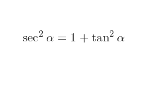
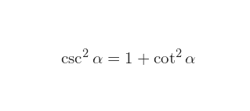
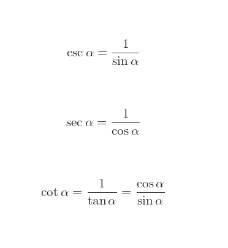

Las identidades trigonométricas son igualdades que involucran funciones trigonométricas y se verifican para cualquier valor permitido de la variable o variables que se consideren, es decir, para cualquier valor que pudieran tomar los ángulos sobre los cuales se aplican las funciones. Si la gráfica de dos funciones coincide, entonces es una identidad. En cambio, si solamente se cortan en uno o algunos puntos, entonces se trata de una ecuación trigonométrica cuyas soluciones son las abscisas de los puntos de corte. Según su forma, las identidades trigonométricas adquieren distintos nombres: identidades trigonométricas de cociente e identidades trigonométricas pitagóricas.
1) Relación entre seno y coseno
|
2) Relación entre secante y tangente |
3) Relación entre cosecante y cotangente |
4) Funciones trigonométricas recíprocas |